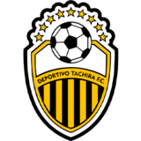
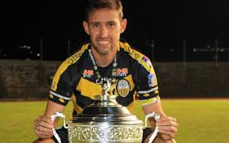

 Deportivo Táchira Fútbol Club, más conocido como Deportivo Táchira o simplemente Táchira, es una institución deportiva de la ciudad de San Cristóbal, Venezuela y su actividad principal es el fútbol profesional. Es uno de los clubes más populares de Venezuela, y el de más participaciones en la Copa Libertadores. A nivel internacional
 el Aurinegro logró clasificar al Hexagonal Final A y aseguraría presencia en competición internacional en el año venidero 2022. El Deportivo Táchira llegaría a la fase final en la ronda de campeonato, donde se enfrentó en la final con el Caracas FC., venciéndolo en la tanda de penales por (4-2) logrando de esta manera el Deportivo Tachira su novena Estrella